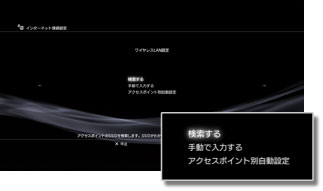
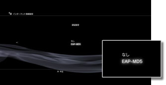
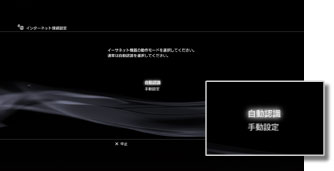
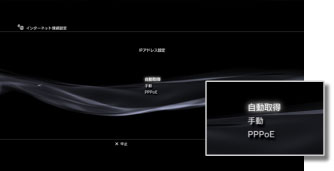
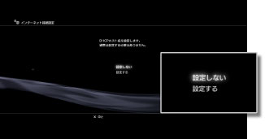
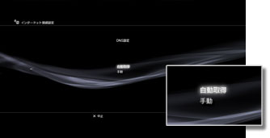
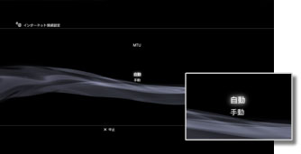
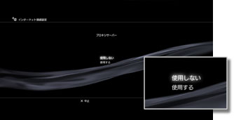
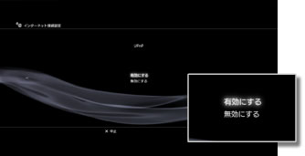

インターネット接続設定（高度な設定）
標準的な設定でインターネットに接続できないときは、必要に応じて設定を変更してください。お使いのインターネット環境に合わせて、それぞれの項目を設定します。
1. |
|
|---|---|
2. |
［インターネット接続設定］を選ぶ。 |
3. |
［カスタム］を選ぶ。 |
 （設定）から
（設定）から  （ネットワーク設定）を選ぶ。
（ネットワーク設定）を選ぶ。接続方法
インターネットへの接続方法を設定します。ワイヤレスLANを搭載したPS3™だけで選べる設定です。

| 有線 | LANケーブルを使って有線で接続する |
|---|---|
| 無線 | 無線LANを使って無線で接続する |
ワイヤレスLAN設定
アクセスポイントのSSIDを設定します。ワイヤレスLANを搭載したPS3™だけで選べる設定です。

| 検索する | 近くにあるアクセスポイントを検索する アクセスポイントのSSIDがわからないときに選びます。アクセスポイントを検索し、SSIDとセキュリティー設定の情報を表示します。 |
|---|---|
| 手動で入力する | キーボードからSSIDを直接入力してアクセスポイントを指定する 設定するSSIDがわかっているときに選びます。 |
| アクセスポイント別自動設定 | アクセスポイントの自動設定機能を使う 対応地域のPS3™だけで選べる設定です。自動設定に対応しているアクセスポイントをお使いのときに選びます。画面の指示に従って操作すると、必要な設定が自動的に完了します。対応アクセスポイントについては、アクセスポイントの販売元にお問い合わせください。 |
ワイヤレスLANセキュリティー設定
アクセスポイントの暗号化キーを設定します。ワイヤレスLANを搭載したPS3™だけで選べる設定です。

| なし | 暗号化キーを設定しない |
|---|---|
| WEP | 暗号化キーを設定する 次の画面に進むと、暗号化キーを入力できます。入力した暗号化キーは［＊］で表示されます。 |
| WPA-PSK/WPA2-PSK |
認証設定
韓国地域で販売されているPS3™だけで選べる設定です。ワイヤレスLANを搭載したPS3™だけで選べます。

| なし | 認証情報を設定しない |
|---|---|
| EAP-MD5 | 公衆無線LANサービスを使うときの認証情報を設定する 次の画面に進むと、ユーザーIDとパスワードを入力できます。詳しくは、公衆無線LANサービス事業者の資料などをご覧ください。 |
イーサネット動作モード
イーサネットの通信速度と動作方式を設定します。通常は［自動認識］を選びます。

| 自動認識 | 標準的な設定が自動的に選ばれる |
|---|---|
| 手動設定 | イーサネットの通信速度と動作方式を手動で設定する |
IPアドレス設定
インターネットに接続するときのIPアドレスの取得方法を設定します。

| 自動取得 | DHCPサーバから割り当てられるIPアドレスを使用する 次の画面に進むと、DHCPサーバのホスト名を設定できます。 |
|---|---|
| 手動 | 使用するIPアドレスを手動で設定する 次の画面に進むと、IPアドレス、サブネットマスク、デフォルトルータ、プライマリーDNS、セカンダリーDNSの値を設定できます。 |
| PPPoE | PPPoEを使ってインターネットに接続する 次の画面に進むと、ユーザーIDとパスワードを設定できます。 |
DHCP
DHCPホスト名を設定します。通常は［設定しない］を選びます。

| 設定しない | DHCPホスト名を設定しない |
|---|---|
| 設定する | DHCPホスト名を設定する |
DNS設定
使用するDNSサーバを設定します。

| 自動取得 | DNSサーバのアドレスを自動的に取得する |
|---|---|
| 手動 | 利用するDNSサーバのアドレスを手動で設定する |
MTU
データ通信時に使用するMTUの値を設定します。通常は［自動］を選びます。

| 自動 | MTUの値が自動的に選ばれる |
|---|---|
| 手動 | 送信するパケットの最大サイズをバイト単位で指定する |
プロキシーサーバー
使用するプロキシーサーバーを設定します。

| 使用しない | プロキシーサーバーを使用しない |
|---|---|
| 使用する | プロキシーサーバーを使用する 次の画面に進むと、プロキシーサーバーのアドレスとポート番号を設定できます。 |
UPnP
UPnP（Universal Plug and Play）の有効／無効を設定します。通常は［有効にする］を選びます。

| 有効にする | UPnPを有効にする |
|---|---|
| 無効にする | UPnPを無効にする |
ヒント
［無効にする］に設定すると、AVチャットやゲームの通信機能を利用するときなどに、相手との通信が制限される場合があります。